Thumbnails
Thumbnails in the file manager.
On Linux, Slerp works with Dolphin, GNOME Files, Nemo, Caja, Thunar and PCManFM-Qt through the freedesktop thumbnailer standard. On Windows it adds a thumbnail handler to Explorer, and on macOS a Quick Look extension for Finder.
Starting a GPU takes 100 to 800 ms, too long to pay for each file. So the first thumbnail starts a helper process that keeps the GPU loaded. On a laptop with an RTX 5070 Ti, each thumbnail after that took a few milliseconds. The helper quits after two idle minutes.
- Dolphin
- GNOME Files
- Nemo
- Caja
- Thunar
- PCManFM-Qt
- Explorer
- Finder
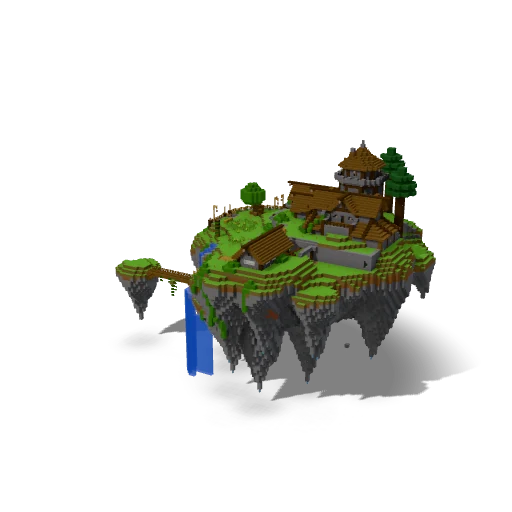
island.litematic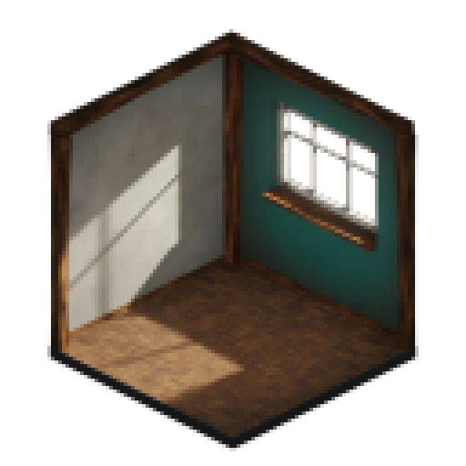
cube_diorama.blend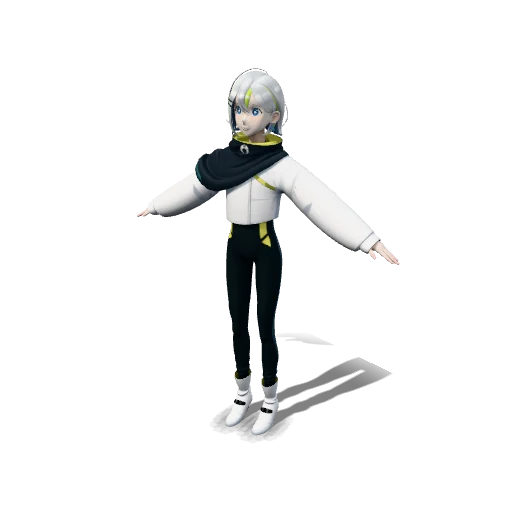
Gene_light.pmx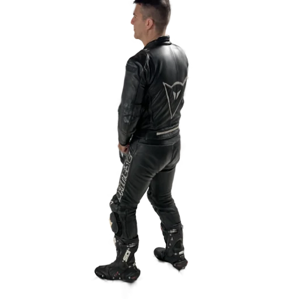
biker.spz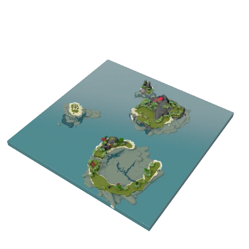
pirate_island.rbxl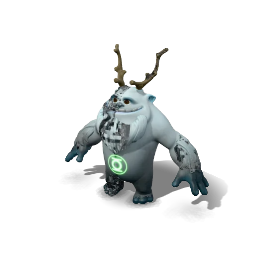
Yeti_Apose.ma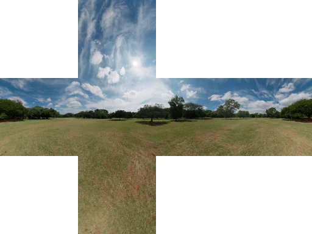
Pretoria Gardens DX10.dds- Leaf001_1K-JPG.mtlx
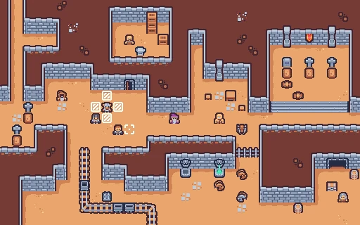
sampleMap.tmx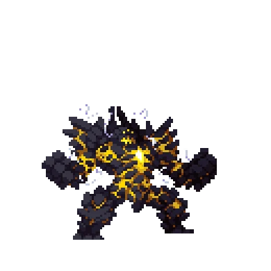
neutral_moltengolem_idle.ase- GoldenGate.exr
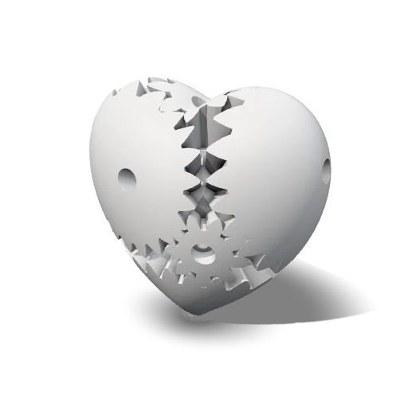
heartgears.3mf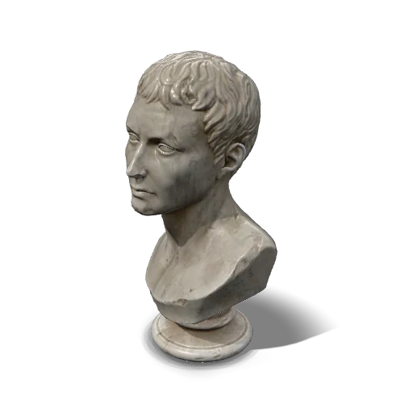
marble_bust_01_1k.gltf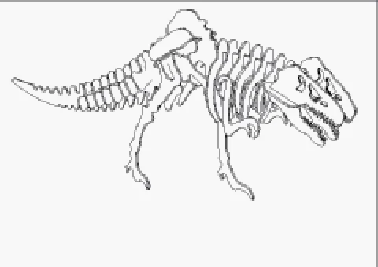
aspose-Tyrannosaurus.dwfx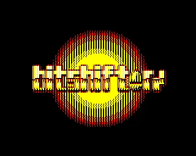
funky-fresh-logo-mode2.bbc